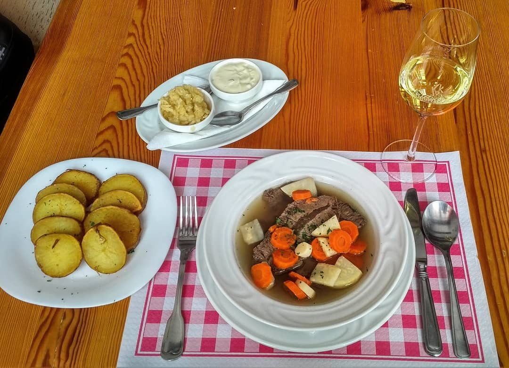

Pažítková omáčka podľa @hostinec_u_vlachu — Normy Jedál
Z aktuální víkendové nabídky:
TAFELSPITZ je rakouská specialita, která se připravuje z hovězího masa, konkrétně květové špičky. Proslavil jej císař František Josef I., který jej měl za své oblíbené jídlo. Maso se vcelku velmi pomalu uvaří s cibulí, kořenovou zeleninou a bobkovým listem. Podává se v talíři se silným vývarem, jablečným křenem a pažitkovou omáčkou. Přílohou jsou opečené brambory.
Nejprve se sní vývar, poté maso s přílohami. A co k tomu jiného, než rakouský Grüner Veltliner :) Dobrou chuť!
Tafelspitz - the famous dish of Austria monarchy and now almost a national dish of Austria. This weekend in the menu at the Hostinec u Vlachů.
#tafelspitz #narodnispecialita #specialita #varenehovezi #zelenina #opekanebrambory #pazitkovaomacka #krensjablky #austria #Oestererreich #Österreich #speciality #nacionaldishofaustria #cookedbeef #vegetable #chive #chivesouce #horseradish #WhiteWine #GrunerVeltliner #Oestererreichvein #hostinecuvlachu #hostinec_u_vlachu #restaurant #jamne #tisnov #moravia #southmoravia #czech